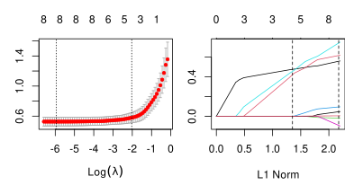
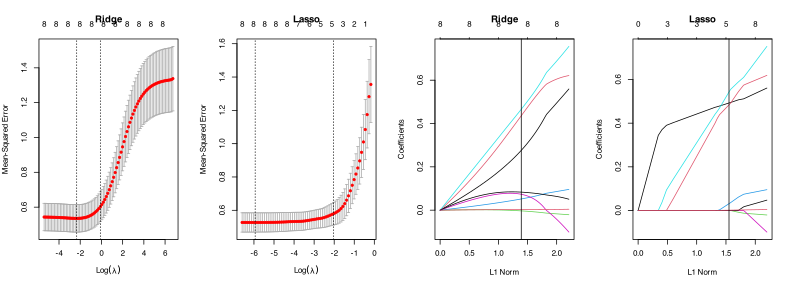

\[
S(z, \lambda) = \begin{cases} z - \lambda & z > \lambda \\
z + \lambda & z < -\lambda \\ 0 & |z| \leq \lambda \end{cases}
%= \textrm{sign}(z)(|z| - \lambda)_+
\]
Iterating over this is called coordinate descent and gives the solution
Packages
There are two main R implementations for finding lasso
{glmnet}: lasso = glmnet(X, Y, alpha=1).
Setting alpha = 0 gives ridge regression (as does lm.ridge in the MASS package)
Setting alpha\(\in (0,1)\) gives a method called the “elastic net” which combines ridge regression and lasso (regularization \(\alpha \|\beta\|_1 + (1-\alpha)\|\beta\|^2_2\)). More on that later.
Default alpha = 1 (it does lasso)
{lars}: lars = lars(X, Y)
lars() also does other things called “Least angle” and “forward stagewise” in addition to “forward stepwise” regression
The path returned by lars() is more useful than that returned by glmnet().
But you should use {glmnet}.
Choosing the \(\lambda\)
You have to choose \(\lambda\) in lasso or in ridge regression
lasso selects variables (by setting coefficients to zero), but the value of \(\lambda\) determines how many/which.
All of these packages come with CV built in.
However, the way to do it differs from package to package
{glmnet} version (same procedure for lasso or ridge)
lasso <-cv.glmnet(X, Y) # estimate full model and CV no good reason to call glmnet() itself# 2. Look at the CV curve. If the dashed lines are at the boundaries, redo and adjust lambdalambda_min <- lasso$lambda.min # the value, not the location (or use lasso$lambda.1se)coeffs <-coefficients(lasso, s ="lambda.min") # s can be string or a numberpreds <-predict(lasso, newx = X, s ="lambda.1se") # must supply `newx`
\(\widehat{R}_{CV}\) is an estimator of \(R_n\), it has bias and variance
Because we did CV, we actually have 10 \(\widehat{R}\) values, 1 per split.
Calculate the mean (that’s what we’ve been using), but what about SE?
par(mfrow =c(1, 2), mar =c(5, 3, 3, 0))plot(lasso) # a plot method for the cv fitplot(lasso$glmnet.fit) # the glmnet.fit == glmnet(X,Y)abline(v =colSums(abs(coef(lasso$glmnet.fit)[-1, drop(lasso$index)])), lty =2)

Paths with chosen lambda
ridge <-cv.glmnet(X, Y, alpha =0, lambda.min.ratio =1e-10) # added to get a minimumpar(mfrow =c(1, 4))plot(ridge, main ="Ridge")plot(lasso, main ="Lasso")plot(ridge$glmnet.fit, main ="Ridge")abline(v =sum(abs(coef(ridge)))) # defaults to `lambda.1se`plot(lasso$glmnet.fit, main ="Lasso")abline(v =sum(abs(coef(lasso)))) # again, `lambda.1se` unless told otherwise

Degrees of freedom
Lasso is not a linear smoother. There is no matrix \(S\) such that \(\widehat{\y} = \mathbf{S}\y\) for the predicted values from lasso.
We can’t use cv_nice().
We don’t have \(\tr{\mathbf{S}} = \textrm{df}\) because there is no \(\mathbf{S}\).
However,
One can show that \(\textrm{df}_\lambda = \E[\#(\widehat{\beta}_\lambda \neq 0)] = \E[||\widehat{\beta}_\lambda||_0]\)
The proof is PhD-level material
Note that the \(\widehat{\textrm{df}}_\lambda\) is shown on the CV plot and that lasso.glmnet$glmnet.fit$df contains this value for all \(\lambda\).
Other flavours
The elastic net
generally used for correlated variables that combines a ridge/lasso penalty. Use glmnet(..., alpha = a) (0 < a < 1).
Grouped lasso
where variables are included or excluded in groups. Required for factors (1-hot encoding)
Relaxed lasso
Takes the estimated model from lasso and fits the full least squares solution on the selected covariates (less bias, more variance). Use glmnet(..., relax = TRUE).
Dantzig selector
a slightly modified version of the lasso
Lasso cinematic universe
SCAD
a non-convex version of lasso that adds a more severe variable selection penalty
\(\sqrt{\textrm{lasso}}\)
claims to be tuning parameter free (but isn’t). Uses \(\Vert\cdot\Vert_2\) instead of \(\Vert\cdot\Vert_1\) for the loss.
Generalized lasso
Adds various additional matrices to the penalty term (e.g. \(\Vert D\beta\Vert_1\)).
Arbitrary combinations
combine the above penalties in your favourite combinations
Warnings on regularized regression
This isn’t a method unless you say how to choose \(\lambda\).
The intercept is never penalized. Adds an extra degree-of-freedom.
Predictor scaling is very important.
Discrete predictors need groupings.
Centering the predictors is important
(These all work with other likelihoods.)
Software handles most of these automatically, but not always. (No Lasso with factor predictors.)
Next time…
What happens when we’re tired of all this linearity.